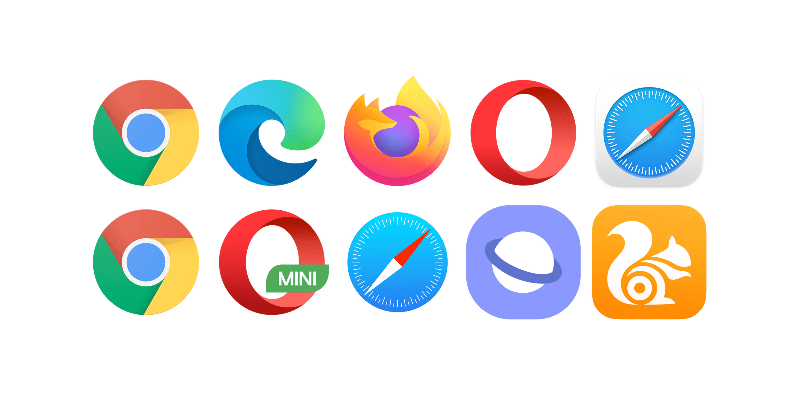

For all browsers to share tabs in all OS


Because we love them all as long as they deliver us that webpage we need and they all do, browsers of all kinds should cooperate to share tabs in every operating system available to users like you and me because it makes our life easy since we use them all. It happened to me right now to experience this browser block because I was reading this pdf document in Microsoft Edge and looking at this website in Chrome but for making this website closer to this document I was reading I instinctively tried to detached this tap from Chrome and attach if to Microsoft Edge but It is an impossible operation in Windows and I am sure in mac and Linux. It reminds it me a bit about interoperability this feature that we should promote in the great tech products and services we are building because it makes people life easier and makes communications and transport smoother and easier.
For this interoperability issue that I am writing about, I am powerless because only Operating systems owners like Microsoft could address it but I thought that it was good to notify you about it and hope that you also will notice another person and maybe if we all speak up we could one day take a tab from chrome and attach it to Edge. This is not something against Microsoft, nor Google neither any other big tech company but just but rather a feature proposition, and this feature is really tech-enabled to say that this is a buildable feature given the state of the art of technology.
Here is the screen video of what I am describing to you, you could open your Edge browser and Chrome browser and test it on your own to see if it works.